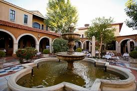
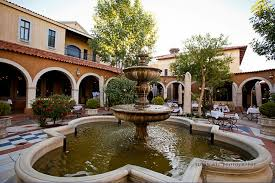

About us: Indulge in an exquisite culinary experience at Stellenbosch Wine Bar and Bistro, where fine dining meets exceptional wine. Located in a cozy, elegant setting, Stellenbosch offers a curated menu that pairs beautifully with its extensive selection of wines, showcasing the best from South Africa and beyond. Whether you're celebrating a special occasion or enjoying a quiet evening with friends, Stellenbosch provides a refined atmosphere for a memorable dining experience.
Working Hours:
Known for its sophisticated menu and a wine list that features top-quality vintages, Stellenbosch Wine Bar and Bistro offers a variety of gourmet dishes, from fresh seafood and premium steaks to seasonal salads and decadent desserts. With its intimate ambiance and knowledgeable staff, the bistro ensures that every dish is expertly crafted and perfectly paired with the ideal wine. Whether you're a wine enthusiast or simply looking for an exceptional meal, Stellenbosch provides a dining experience that's both luxurious and welcoming.